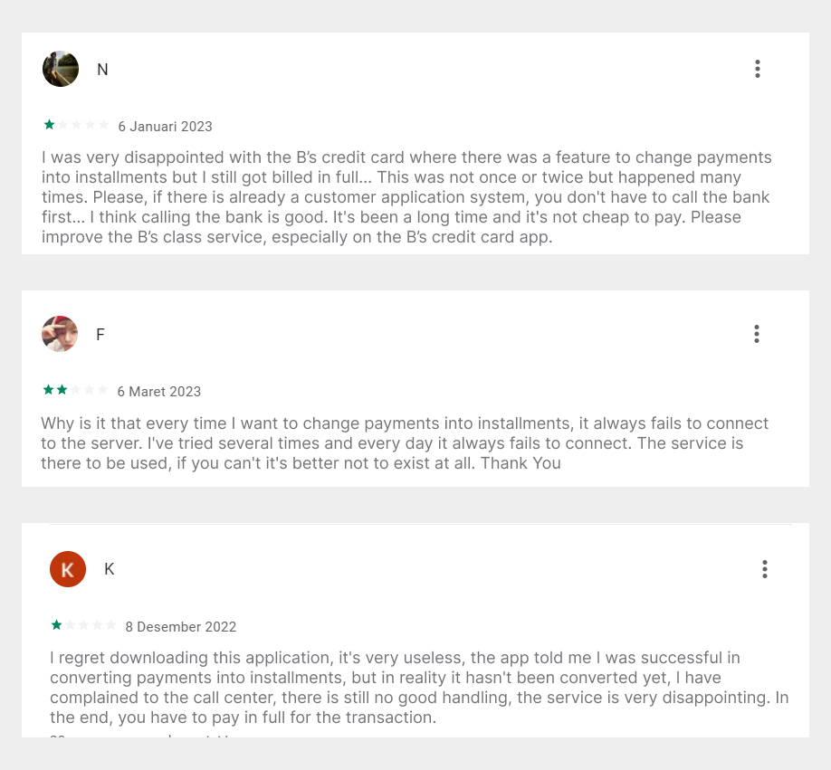
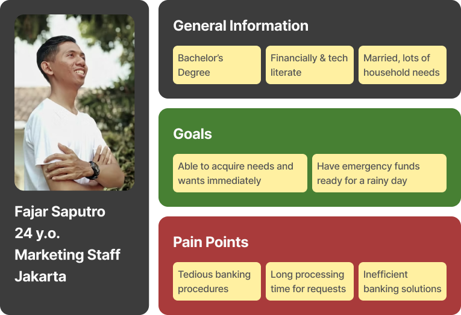
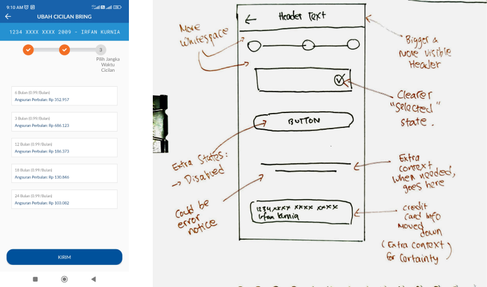
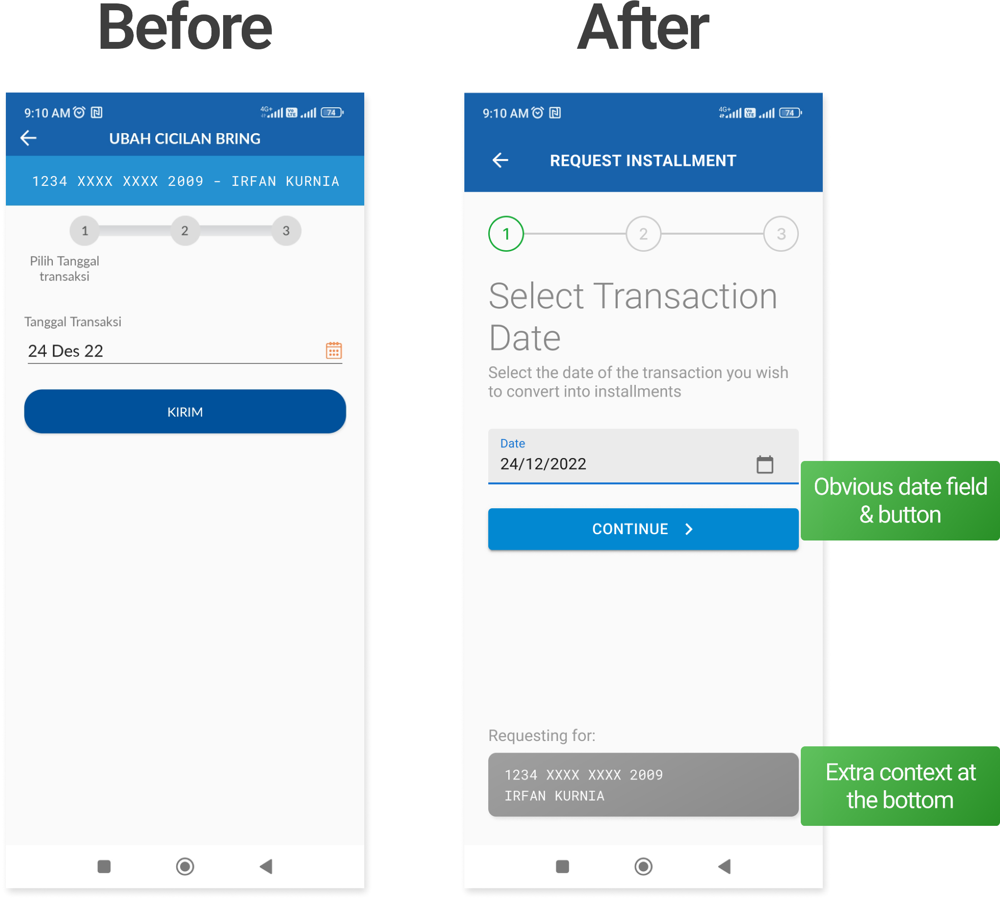
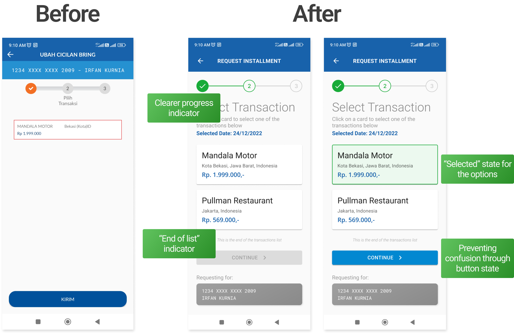

Redesigning installment request UX and UI on credit card app

Project Summary: I've redesigned the UI of a credit card app, particularly on the installment request feature to make it clearer to the user and eliminatetheir error rate and decrease task time by 69%.
Activities
- Usability Testing
- User Interviews
- User Interface Redesign
Results
- 69% decrease in installment request time
- 300% increase in subjective satisfaction
The Problem
It started as a personal problem. When I have to make a big purchase but don't want to exhaust my credit card limit, I tend to request that my payment is changed into installments.
The current credit card app that I'm using has problems. The UI seems outdated, lacking hierarchy, and it's hard to know if I did the right thing on the app to split my large payment into installments.
Making Credit Cards Easier to Handle for Millennials and Gen Z
Today it's only ordinary for banks to acquire new customers by developing a mobile app to keep up with millennials and Gen Zers entering the workforce. Since the smartphone is a permanent fixture of nearly every activity we do, it is no wonder that banking is one of the things that should be done at their fingertips.
As a part of this cohort, I consider banking (the traditional one) as tedious and often overwhelming. From my own experiences and other people's, it is not a hard decision to leave a bank solely because their app is painful to use.
My Role
As the sole UX researcher and designer, I conducted an end-to-end UX process from research to design. I used the secondary research method and gathered data from various reliable sources such as academic papers, credible reviews, etc.
These are the preliminary research questions I came up with to kickstart the research process:
- What are the current features offered by the app?
- What are the current challenges users are facing with the existing mobile app design?
- What are the most common user complaints and praises about the existing design?
Problem Space
Mainly perceived as Inconvenient
The first thing I did in this project is reading reviews from Google Play Store. There are many horrendous reviews about the app as a whole. But in this case study, I want to focus on one feature of the app. The "Convert to Installments" feature enables users to split their full payment into installments.
Here are some examples of those reviews and you can tell immediately tell that the app is quite bad.
Usability Issues
I conducted quick usability testing sessions with 5 users of the app. Needless to say, I found some critical usability issues at each step of the installment request process. I also created a persona based on the test. I describe the problems in this short video:
User Persona & Design Challenges
From the tests and the user persona, here are the design challenges:
- How might we create a simple but effective experience for customers?
- How might we communicate instructions and information clearly to users?
- How might we increase user satisfaction to prevent churn?
Initial Ideation & Design Decisions
I moved quickly through an interactive design process, combining paper and digital prototyping, testing prototypes with users, and receiving feedback from users and domain experts.
The iteration process gives valuable insight. Some changes are implemented for improved overall usability.
Initial Ideation for UI Improvement
- Bigger & more visible header: The current design did not stand out at the top of the information hierarchy. So it needs a clear indication of what features the user is in at the time.
- More (proper) whitespace: The current design lacks proper whitespace, creating confusion regarding the proximity between elements that should be separated.
- Clearer "Selected" state: Users weren't sure if the elements they selected were actually "selected", giving uncertainty for them.
- Disabled button: When no data is selected, the button appears available to click. Users should be blocked from continuing to the next step before filling in mandatory fields.
- Credit card info at the bottom: The credit card info is always displayed at the bottom of the page. Preventing anxiety of requesting installments for the wrong card.
UI Improvements
Due to time constraints, I was only able to conduct the UI audit with the domain experts and quickly moved to the high-fidelity prototyping phase.
Per the previous ideation notes, I managed to redesign the whole user interface.
 Full UI Demonstration
Here is the full demonstration of the improved user interface:
Validation
I conducted usability testing sessions again with the same users. I used the single usability metric scorecard (developed by Jeff Sauro, Ph.D.) to measure effectiveness, efficiency, and satisfaction.
- The original design: People finished their tasks with an average of 6 errors during the journey. And it took 6 minutes 28 seconds (on average) to finish the installment request procedure.
- The redesign: People finished their tasks on their own without errors. And it took only 2 minutes to finish the registration process. 69% decrease in the installment request procedure.
- Users' subjective satisfaction with the new design (4.8/5) was 300% higher than the original system (1.2/5).
User feedback:
"It's super clean and concise now! I can finish the installment request process way faster than the last time."
"At every step of the process, there's always this anxiety of getting the data all wrong. But now I can proceed with speed and confidence."
Challenges and Future Improvements
The biggest challenge for this project was the time constraint. I tried to simulate a rapid development process to achieve greater usability in the shortest amount of time. The project was done in just a month. But I believe if there's more time, the overall design could be better.
The takeaway of this project is that users need a clear information hierarchy before proceeding with anything confidently. We need to make banking less tedious and overwhelming for the customers to prevent churn and loss of profit.
And since this is a research-focused case study, I am well aware that the user interface's aesthetics could be improved. Especially amongst younger customers, the aesthetic-usability effect is stronger. If I work together with a specialized UI designer, perhaps the final high-fidelity prototype would look way better.
The users I talked to are really helpful in getting the necessary insights. I am glad that the design upgrade is perceived positively by the users.